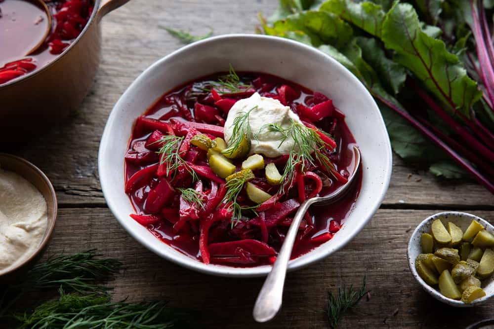

Ukranian Borscht

What is it..?
Borscht is a hearty, cure-all, Ukranian soup made with beets. Packed full of nutrient dense veggies, this hearty soup will put the pep back in your step if you're feeling tired or a little run down. It can be made vegan, vegetarian, or with meat included. This recipe is for the vegetarian version. Don't let it's unique pink color make you nervous, it's absolutely divine when served warm on a cold winter day or cold on a hot summer day!
Ingredients
- 2 tablespoons oil (vegetable, olive, sunflower, canola, or avocado)
- 1 medium onion
- 2 medium carrots
- 2 medium beets
- 2 liters vegetable broth
- 2 potatoes
- 1/4 head red or white cabbage
- 1 15oz can of cannellini beans
- 2 bay leaves
- 2 tablespoons lemon juice
- 2 tablespoons tomato paste
- 2 cloves garlic, minced
- 4 tablespoons fresh dill, chopped
- Salt and pepper to taste
- Sour cream to garnish
Directions
- Prepare your vegetables first by dicing your onion, carrots, beets, potatoes and chop the cabbage into ribbons. You can also grate your carrots and beets for a finer texture.
- In a large pot or Dutch oven, heat the oil to medium high heat then add diced carrots and onion to sautee for about 5 minutes, stirring often. If your beets are diced, you can sautee them as well at this time, but if they're grated add them in the next step.
- Add hot vegetable broth, diced potatoes, chopped cabbage, bay leaves, and any grated veggies to the pot, put the lid on and cook for about 10 minutes.
- Add lemon juice, tomato paste, cannellini beans, minced garlic, chopped dill, and salt and pepper to the pot. Cover and cook for 5 more minutes. Let rest with the lid on for 15 more minutes before serving.
- Garnish with a spoonful of sour cream and more fresh dill. Serve with rye bread and pickles. Enjoy!